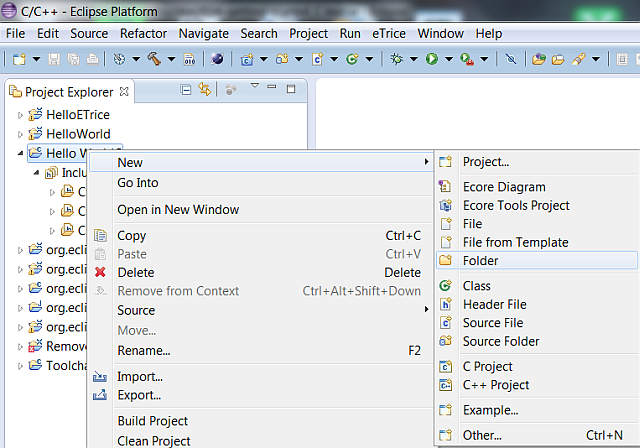
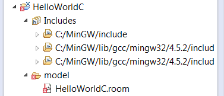

Before you can create a new C-model, you have to create a new C project as described in Setting up the Workspace for C Projects. Remember:
The workspace should look like this:
The next step is to add the model folder: Right click on the new project. Select New->Folder and name it model.

Add the model file to the folder. Right click on the new folder. Select New->file and name it HelloWorldC.room.

Due to the file ending .room, the tool will ask you to add the Xtext nature. Answer with Yes.

The workspace should look like this:
